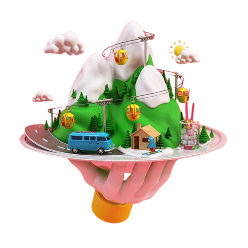
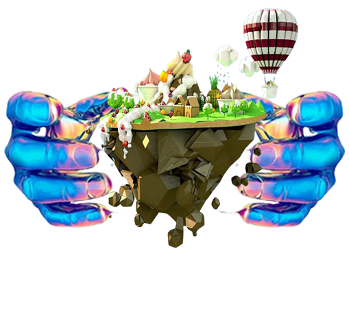

.png)
LES CAUSES
Un feu de forêt incontrôlé peut tout dévaster sur son passage, se propager à des kilomètres, franchissant les rivières et les routes. Chaque année, entre 60000 et 80000 incendies de forêt se déclarent, détruisant entre 3 et 10 millions d’hectares. Si les feux de forêt ont des conséquences différentes sur l’environnement, selon leur importance et leur fréquence, les causes fréquentes sont :
.png)
Le TAVY
Le chômage
Le climat
Le Charbon
L'éducation
LES SOLUTIONS
#1 - Organiser les plantations
Si vous êtes dans une zone à risque, supprimez les arbustes, cela espacera les plus grands arbres et le feu aura alors plus de mal à se propager d’un arbre à l’autre.
Voir plus ...
Cette zone pourra faire office de tampon entre la nature environnante et l’espace que vous souhaitez défendre.#2 -Maison et batiments
Utilisez du matériel qui résiste au feu lorsque vous rénovez des infrastructures : vous pouvez rendre vos bâtiments plus ignifugés en utilisant des matériaux résistants aux flammes (briques, pierres, métal, asphalte, tuiles plutôt que bois).
Voir plus ...
Méfiez-vous des revêtements en vinyle, qui peuvent exploser au contact de trop fortes chaleurs.

#3 -Aménagement de l’exploitation
Aménagez des bandes de terre vierges de toute végétation, afin que le feu ne se propage pas. Ces bandes peuvent être naturelles (rivières, ruisseaux…) ou construites par l’homme (routes, champs labourés…).
Voir plus ...
Vous pouvez mettre du gravier entre les plates-bandes de fleurs et sur les chemins. Les pelouses ou prés doivent être tondus, et les pourtours des buissons et arbustes doivent l’être plus court encore.#4 -Diminution des combustibles
Enlevez du sol les branches et débris végétaux qui s’enflamment facilement, ainsi que les aiguilles de pin ou les feuilles mortes. Ce genre de combustible affecte la rapidité du feu et le porte, causant l’embrasement des habitations dans la plupart des cas.
Voir plus ...
Veillez également à ce que les caniveaux, les gouttières, les toits et les dessous de terrasses soient propres et dégagés.

#5 - Précautions diverses
Prenez toutes les précautions qui s’imposent pour barbecues et feux de camp. Enterrez les cendres. En période de sècheresse, ne prenez pas de risques inutiles. En tout temps, respectez les restrictions et interdictions émises par les autorités administratives.
Voir plus ...
Prévoyez et répétez des plans d’évacuation en cas d’incendie.LES STATISTIQUES
Des pertes pour l'état
Les feux de brousse sont de véritables pertes pour Madagascar. Il s’agit non seulement d’une attaque massive contre toute une population, puisque les maladies qui en résultent peuvent être chroniques, mais aussi une perte économique. Selon les estimations, les pertes annuelles dues à ces feux de brousse s’élèvent à 450 millions USD.